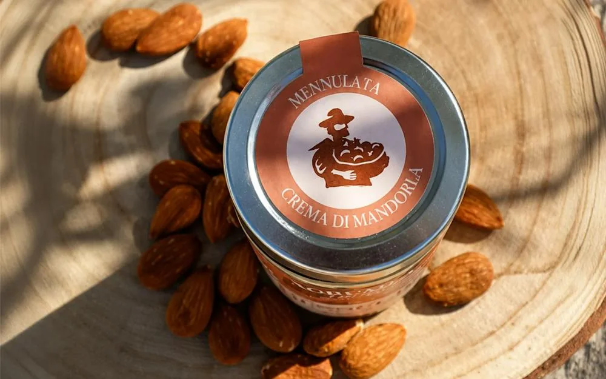
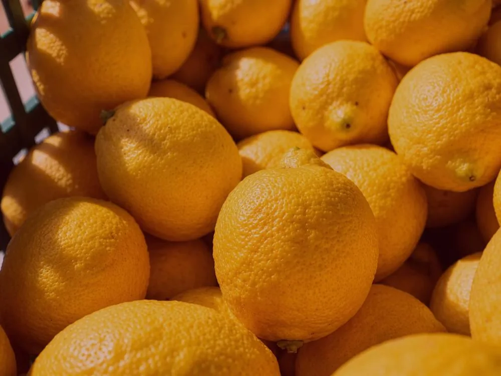
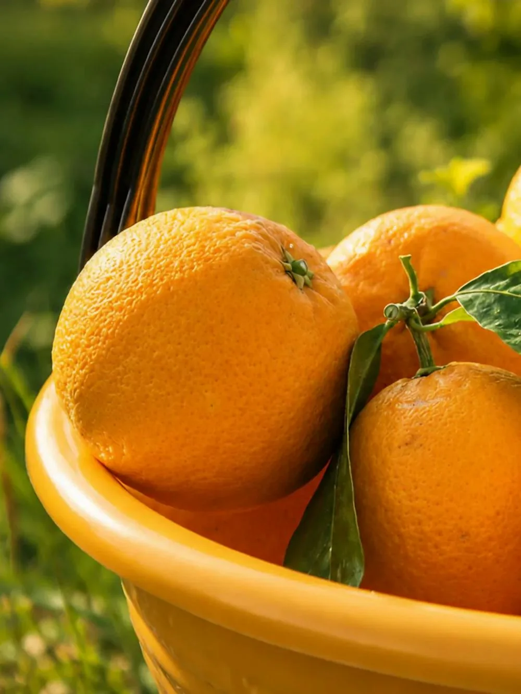
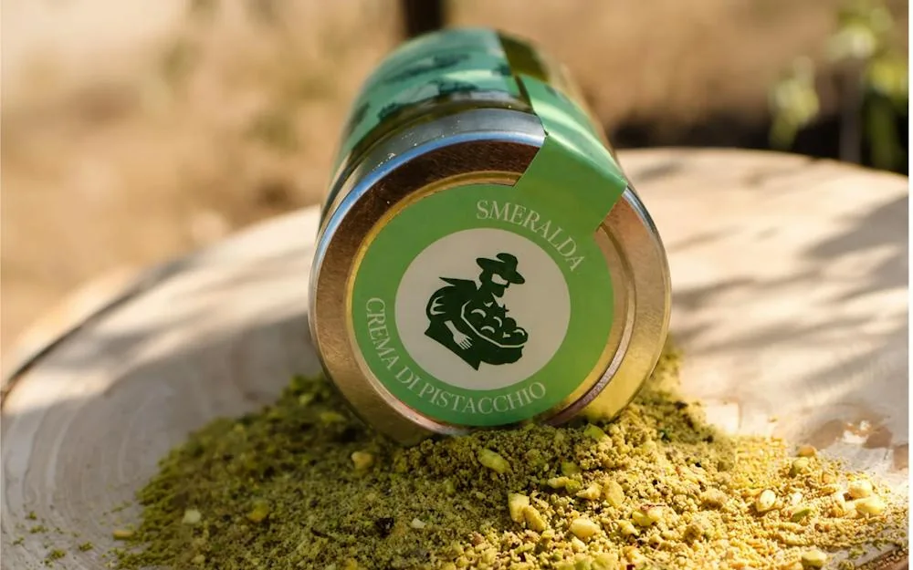

Tuono almonds
Sweet, fragrant and versatile. Grown in the Iblei and shelled to order for the pantry and the kitchen.
- Formats
- 500 g · 1 kg
- Case
- 12 / 8 pcs
- All year
- Vacuum-packed
Production · The land
Floridia · Syracuse
Fragrant citrus, freshly harvested almonds, emerald pistachios. We work with the rhythms of the land, not against them — and we make everything ourselves, from the first pick to the last jar.

A slower timetable
Our daily life is made of fragrant citrus groves, almonds dried in the Sicilian sun and pistachios grown on volcanic soil. Each variety has its own season, its own character, its own moment.
We prune, irrigate and harvest by hand. We wait for the fruit rather than hurry it. It is slower, less predictable, and the only way we know how to do it.
More about the farm
Citrus
Navel and Moro oranges, Femminello lemons, late Ciaculli mandarins and pomegranates — picked to order, in 10 kg crates.
| Variety | Jan | Feb | Mar | Apr | May | Jun | Jul | Aug | Sep | Oct | Nov | Dec |
|---|---|---|---|---|---|---|---|---|---|---|---|---|
| Navel orangeFresh | available | not in season | not in season | not in season | not in season | not in season | not in season | not in season | not in season | not in season | available | available |
| Navel orangeJuice | available | not in season | not in season | not in season | not in season | not in season | not in season | not in season | not in season | not in season | available | available |
| Moro blood orangeFresh | available | available | not in season | not in season | not in season | not in season | not in season | not in season | not in season | not in season | not in season | not in season |
| Femminello lemonFresh | available | available | available | available | not in season | not in season | not in season | not in season | not in season | not in season | available | available |
| Late Ciaculli mandarinFresh | available | available | not in season | not in season | not in season | not in season | not in season | not in season | not in season | not in season | not in season | not in season |
| PomegranateFresh | not in season | not in season | not in season | not in season | not in season | not in season | not in season | not in season | not in season | available | available | not in season |
Dried fruit
Vacuum-packed and available all year. Shelled by hand, with nothing added.

Sweet, fragrant and versatile. Grown in the Iblei and shelled to order for the pantry and the kitchen.

Grown on volcanic soil rich in minerals, harvested at the plant's own pace. Intense, green and unmistakably Sicilian.
From grove to jar
01
Organic practice, minimal intervention, and varieties chosen for flavour rather than shelf life.
02
At the exact point of ripeness. Small crates, early mornings, and no long journeys to the kitchen.
03
In small batches, with the fruit's own pectin and sugar. We stop when the texture is right, not when the clock says so.
04
Sealed at the source in our own laboratory. No colourings, no thickeners, no unnecessary distance.
Taste the harvest